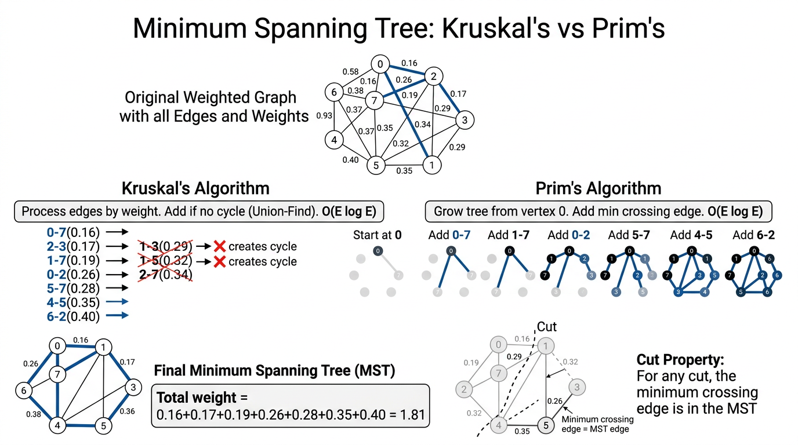

Minimum Spanning Trees — COMP0005 Algorithms¶
Lecture-style notes. A minimum spanning tree (MST) is one of the cleanest places where greedy reasoning is not just plausible but provably correct: the cut property justifies two classic algorithms — Kruskal (edges + union–find) and Prim (grow a tree + priority queue). This topic ties together graphs, greedy methods, priority queues, and disjoint-set (union–find) structures.
1. COMPLETE TOPIC SUMMARIES¶
Problem setup: graphs, weights, and trees¶
Work with an undirected graph \(G = (V, E)\) that is connected and has positive edge weights \(w(e) > 0\) for every edge \(e\). (Many implementations also allow zero weights; the theory is usually stated with strictly positive weights to avoid “free” edges cluttering tie-breaking discussions.)
- Spanning subgraph: uses all vertices in \(V\) (and some edges from \(E\)).
- Spanning tree: a spanning subgraph that is a tree — i.e. connected and acyclic.
Minimum spanning tree (MST): among all spanning trees of \(G\), one whose total weight
is as small as possible. (If edge weights are distinct, the MST is unique; with ties, there may be multiple MSTs with the same minimum total weight.)
Counting edges (fundamental fact): any tree on \(|V| = V\) vertices has exactly \(V - 1\) edges. So every spanning tree of \(G\) has \(V - 1\) edges — no more, no fewer.
Why “minimum” matters: spanning trees model backbone networks (connect all sites cheaply), clustering (later connections to single-linkage ideas), approximation for other hard problems, and pipeline problems where cycles are redundant or costly.
Edge-weighted graph representation¶
Represent \(G\) with an adjacency list, but each adjacency entry is an edge object, not merely a neighbor id.
Edge class (conceptual API):
- Fields \(v\), \(w\) (the two endpoints) and
weight. endPoint()(Java) /end_point()(Python style below) — return one endpoint (convention varies by implementation).otherEndPoint(vertex)/other_end_point(vertex)— given one endpoint, return the other.compareTo(edge)— compare this edge toedgeby weight (forMinPQordering).
Graph layout:
- For each vertex, store a bag (list) of references to
Edgeobjects. - Each undirected edge \(\{v,w\}\) appears twice in storage: once in
v’s adjacency list and once inw’s — so you can traverse incident edges from either endpoint in \(O(\deg)\) time.
Beginner tip: when tracing algorithms, draw the graph and label edge weights; when simulating Edge, always ask “from which endpoint am I standing?” before calling otherEndPoint.
Greedy template: cuts, crossing edges, and the cut property¶
Cuts and crossing edges¶
- A cut \((S, V \setminus S)\) partitions the vertices into two nonempty sets \(S\) and its complement.
- An edge \(e = \{v,w\}\) crosses the cut if \(v \in S\) and \(w \notin S\) (or the symmetric case).
Cut property (MST cornerstone)¶
Cut property: Fix any cut \((S, V\setminus S)\). Let \(e\) be a minimum-weight edge among all edges that cross this cut. Then \(e\) belongs to some MST of \(G\).
(If weights are unique, \(e\) belongs to the MST.)
Greedy story (the “grey / black edge” narrative):
- Imagine all edges initially grey (undecided).
- Find a cut such that no crossing edge has yet been chosen (black) as part of your growing solution.
- Among crossing edges for that cut, pick one of minimum weight and color it black (add it to the MST under construction).
- Repeat until you have \(V - 1\) black edges.
Intuition: any spanning tree must connect the two sides of the cut; to do that it needs at least one crossing edge. If you ever use a crossing edge heavier than the cut’s lightest crossing edge, you can swap it for the lighter one without disconnecting anything and strictly improve (or not worsen) total weight — that swap idea is the heart of proofs.
Related idea (optional enrichment): the cycle property — the heaviest edge on any cycle is never needed in an MST. Kruskal’s “discard cycle edge” view pairs naturally with this; the cut property is the dual viewpoint.
Kruskal’s algorithm¶
Key idea: scan edges in nondecreasing order of weight. Add the next edge unless it would create a cycle with edges already chosen.
Why it matches the cut property: when you add the lightest edge \(e\) that does not complete a cycle among previously chosen edges, you can interpret that step as choosing the minimum crossing edge for a cut where \(S\) is one connected component in the forest built so far (formal proofs make this precise).
Cycle test: maintain a partition of vertices into components. Edge \(\{v,w\}\) creates a cycle iff \(v\) and \(w\) are already in the same component — exactly what union–find (UF) tracks.
Implementation pattern:
MinPQ<Edge>— all edges, priority = weight.UFwithconnected(v,w)andunion(v,w).Queue<Edge>(or list) — edges of the MST in addition order.
class KruskalMST:
def __init__(self, G):
self.mst = Queue()
pq = MinPQ()
for e in G.edges():
pq.insert(e)
uf = UF(G.V())
while not pq.is_empty() and self.mst.size() < G.V() - 1:
e = pq.del_min()
v = e.end_point()
w = e.other_end_point(v)
if not uf.connected(v, w):
uf.union(v, w)
self.mst.enqueue(e)
(Some slides use either() / other(v) instead of end_point() / other_end_point(v) — same roles.)
Performance (typical COMP0005 / Sedgewick–Wayne style, worst-case big-O):
- Build PQ: insert \(E\) edges → \(O(E \log E)\).
- Delete-min loop: up to \(E\) deletes → \(O(E \log E)\).
- Union–find: \(V - 1\) successful
unioncalls and \(O(E)\)find/connectedoperations → \(O(E \log V)\) with basic weighted quick-union analyses (or \(O(E \,\alpha(V))\) amortized with path compression — often cited as “almost constant per op” but exams may stick to \(\log\)-family bounds).
Overall: \(O(E \log E)\) dominates (note \(E \le V(V-1)/2\) implies \(\log E = O(\log V)\) in dense graphs, but \(O(E \log E)\) is the clean general statement).
Space: \(O(E)\) for the PQ plus \(O(V)\) for UF.
Prim’s algorithm (lazy version)¶
Key idea: start from a root vertex (say \(0\)). Grow a single tree \(T\) by repeatedly adding a minimum-weight edge that has exactly one endpoint in \(T\) (a light edge from \(T\) to the rest).
Lazy Prim with a min-PQ of edges:
- Priority queue stores candidate edges; priority = edge weight.
delMingives the cheapest candidate.- Discard if both endpoints are already marked in \(T\) (stale entry — “lazy” deletion).
- Otherwise add the edge to the MST, mark the newly reached vertex, and insert all incident edges to unmarked neighbors.
class LazyPrimMST:
def __init__(self, G):
self.marked = [False] * G.V()
self.mst = Queue()
self.pq = MinPQ()
self._visit(G, 0)
while not self.pq.is_empty() and self.mst.size() < G.V() - 1:
e = self.pq.del_min()
v = e.end_point()
w = e.other_end_point(v)
if self.marked[v] and self.marked[w]:
continue
self.mst.enqueue(e)
if not self.marked[v]:
self._visit(G, v)
if not self.marked[w]:
self._visit(G, w)
def _visit(self, G, v):
self.marked[v] = True
for e in G.adj(v):
x = e.other_end_point(v)
if not self.marked[x]:
self.pq.insert(e)
Performance (lazy Prim):
- Each edge may be inserted multiple times in the lazy variant, but standard worst-case bounds still land at \(O(E \log E)\) for PQ operations.
- Extra space \(O(E)\) for the PQ in the worst case (many stale entries).
Eager Prim (not fully expanded here) stores \(O(V)\) keys in the PQ by keeping, for each non-tree vertex, the cheapest connecting edge to the tree — same greedy logic, better space; still PQ-driven.

{kind=link}
Kruskal vs Prim — same greed, different data structures¶
| Aspect | Kruskal | Prim (lazy) |
|---|---|---|
| Growth shape | Forest of trees merging | Single growing tree from a root |
| Next edge | Globally smallest among all remaining | Smallest fringe edge from current tree |
| Main DS | Sort/PQ of edges + union–find | PQ of edges (lazy) or PQ of vertices (eager) |
| Cycle reasoning | Explicit UF test | Implicit — tree + one fringe edge cannot close a cycle if exactly one endpoint is new |
Both are valid instantiations of the generic greedy MST method justified by the cut property.
2. EXAM-STYLE QUESTIONS (WITH MODEL ANSWERS)¶
Q1 — Definitions and the V-1 edge count¶
Question. Define spanning tree and minimum spanning tree for a connected undirected graph \(G=(V,E)\) with positive edge weights. Prove that every spanning tree of \(G\) has exactly \(|V|-1\) edges.
Model answer. A spanning tree is a subgraph that is connected, acyclic, and includes all vertices of \(G\). An MST is a spanning tree whose sum of edge weights is minimum among all spanning trees. For the count: a tree on \(n\) vertices has \(n-1\) edges — standard fact (e.g. prove by induction: removing a leaf reduces \(n\) and \(m\) each by 1). A spanning tree has all \(n=|V|\) vertices, so \(n-1 = |V|-1\) edges.
Q2 — Cut property (statement + miniature application)¶
Question. State the cut property precisely. In the triangle graph on vertices \(\{A,B,C\}\) with edges \(AB=1\), \(BC=2\), \(AC=3\), which edge is certain to appear in every MST? Justify using a cut.
Model answer. For any cut \((S, V\setminus S)\), let \(e\) be a minimum-weight edge crossing the cut; then \(e\) is in some MST (and in the MST if weights are unique). Take \(S=\{A\}\). Crossing edges are \(AB\) (weight 1) and \(AC\) (weight 3). The lightest crossing edge is \(AB\), so \(AB\) lies in an MST. Since weights are distinct, the MST is unique — \(AB\) is in the MST. (The full MST here is \(\{AB, BC\}\) with total weight \(3\).)
Q3 — Kruskal trace with union–find¶
Question. Run Kruskal on vertices \(1,2,3,4\) with edges \((1,2,1)\), \((2,3,2)\), \((1,3,3)\), \((3,4,4)\) (format \((u,v,w)\)). List edges in MST order and note which edge is skipped and why.
Model answer. Sort by weight: \((1,2,1)\), \((2,3,2)\), \((1,3,3)\), \((3,4,4)\). Add \((1,2)\) — components \(\{1,2\},\{3\},\{4\}\). Add \((2,3)\) — \(\{1,2,3\},\{4\}\). Next \((1,3)\): endpoints 1 and 3 are already connected → skip (would form a cycle). Add \((3,4)\) — connected graph with \(3\) edges for \(4\) vertices → done. MST: \((1,2), (2,3), (3,4)\); skipped: \((1,3)\).
Q4 — Lazy Prim trace¶
Question. Starting from vertex \(1\) in the graph of Q3, list the first few delMin outcomes in lazy Prim until the MST is complete. Explain one “continue” (both endpoints marked) case if it occurs.
Model answer. visit(1) inserts \((1,2,1)\) and \((1,3,3)\). delMin → \((1,2)\); add to MST; visit(2) inserts \((2,3,2)\) (and \((2,1)\) may be inserted but leads to stale entries). PQ holds \((2,3,2)\), \((1,3,3)\), possibly \((2,1)\). Next delMin might be \((2,1)\) or \((1,2)\) again — both endpoints marked → continue (lazy discard). Eventually \((2,3,2)\) is taken → add; visit(3) inserts \((3,4,4)\) and \((3,1)\), \((3,2)\). Stale copies of edges inside \(\{1,2,3\}\) are discarded until \((3,4)\) is added. Final MST same as Kruskal: \(\{(1,2),(2,3),(3,4)\}\). The key exam point: stale PQ entries are normal; correctness comes from always eventually taking the cheapest real fringe edge.
Q5 — Complexity and Kruskal vs Prim¶
Question. Give the worst-case time complexity of Kruskal as \(O(E \log E)\) and identify the bottlenecks. In one sentence, when might Prim be conceptually preferable to Kruskal?
Model answer. Kruskal: building and repeatedly delMin-ing a PQ of \(E\) edges costs \(O(E \log E)\); union–find costs \(O(E \,\alpha(V))\) amortized with good UF or \(O(E \log V)\) in simpler analyses — dominated by PQ for typical ranges. Prim grows one tree and shines when the graph is dense or PQ-on-vertices (eager) keeps PQ size \(O(V)\) — exam answers often say: Prim is natural for dense graphs / adjacency-heavy growth; Kruskal is simple when edges are given explicitly and sorting them is natural. (Both are \(O(E \log E)\) in the lazy-PQ forms quoted in many slides.)
3. MUST-KNOW KEY POINTS¶
- Spanning tree: connected, acyclic, all vertices; exactly \(V-1\) edges.
- MST: spanning tree with minimum total weight (positive weights standard in statements).
- Edge-weighted adjacency lists: store
Edge(v, w, weight); each undirected edge twice. - Cut \((S, V\setminus S)\); crossing edge joins different sides.
- Cut property: min-weight crossing edge for any cut is in some MST (unique MST if distinct weights).
- Kruskal: edges by increasing weight; add if UF says different components, else skip (cycle).
- Kruskal DS:
MinPQ+UF+ MST queue; \(O(E \log E)\) worst case (PQ dominates in textbook bound). - Prim: grow one tree; repeatedly take cheapest edge with one endpoint in tree.
- Lazy Prim:
marked[], PQ of edges, skip if both ends marked;visitpushes edges to unmarked neighbors. - Lazy Prim: \(O(E \log E)\) time, \(O(E)\) extra space for PQ (stale entries).
- Both algorithms are greedy and justified by the same cut-property logic.
4. HIGH-PRIORITY TOPICS¶
🔴 Must Know¶
- Definitions: spanning tree, MST, \(V-1\) edges for trees on \(V\) vertices
- Edge API:
end_point/other_end_point, weight,compare_toby weight - Cut property — statement and small-graph application (identify light crossing edge)
- Kruskal’s loop: sorted edges + UF cycle test; what is skipped and why
- Prim’s loop: marked vertices, fringe edges, lazy discard rule
- Big-O: \(O(E \log E)\) for both standard lazy implementations; know PQ dominates Kruskal’s sorting/PQ story
- Kruskal vs Prim: forest + UF vs single tree + PQ
🟡 Important¶
- Why each undirected edge is stored twice in adjacency lists
- Greedy colouring narrative (grey/black edges) tying steps to cuts
- Stale entries in lazy Prim and why they do not break correctness
- Union–find at high level:
connected,union, path compression / union by rank as “implementation makes UF practically fast” - Uniqueness: distinct weights → unique MST; ties → possible multiple MSTs same weight
🟢 Useful but Lower Priority¶
- Cycle property (dual to cut property) and exchange arguments in proofs
- Eager Prim vs lazy Prim (PQ size \(O(V)\) vs \(O(E)\))
- Fibonacci heap Prim (\(O(E + V \log V)\)) — recognition only unless your lecturer emphasizes it
- Borůvka’s algorithm — parallel / historical curiosity
- Kruskal with pre-sorted edges (complexity shifts if \(E\) is small or edges arrive sorted)
5. TOPIC INTERCONNECTIONS & BIGGER PICTURE¶
- Greedy algorithms: MST is the reference proof pattern for greedy correctness — local choices (light edge across a cut) with a global optimum guarantee.
- Union–find (from connectivity / percolation topics) becomes an algorithmic engine here, not just a model — Kruskal is the standard payoff.
- Priority queues reappear: Prim is Dijkstra-shaped “grow a frontier by best edge/vertex cost” on a different kind of objective (tree weight, not shortest path distances) — comparing the invariants strengthens both.
- Graph representation choices: adjacency lists + edge objects prepare you for flow, shortest paths, and processing pipelines where metadata on edges matters.
- Cut property ↔ cycle property: two lenses on the same MST structure — useful in proofs and in edge case reasoning (e.g. heaviest edge on a cycle is safe to exclude from some cheapest spanning solution when heavier alternatives exist).
6. EXAM STRATEGY TIPS¶
- Draw the graph. For Kruskal/Prim traces, a picture prevents mixing \(v\) and
other_end_point(v). - State the theorem before you use it: “By the cut property, …” reads better than jumping to an edge without justification.
- Kruskal: write the sorted edge list first; maintain components (UF or coloured vertices) explicitly.
- Prim: track
marked; when youdelMin, check both endpoints before claiming an MST addition — expect lazy continue steps. - Complexity questions: separate PQ costs from UF costs; end with which term wins to \(O(E \log E)\) in standard statements.
- Proof sketches: practise the exchange argument — assume an MST omits the light crossing edge \(e\); show some heavier crossing edge \(f\) is used and swap \(f\) for \(e\) without breaking connectivity or creating a cycle — contradiction to minimality.
These notes align with standard COMP0005-style treatments of MSTs (Sedgewick/Wayne-flavoured). Follow your lecturer’s exact API names (end_point / endPoint vs either), log base conventions, and whether they emphasize amortized UF (\(\alpha(V)\)) versus \(O(\log V)\) union–find bounds.